En arabe, « kaaba » signifie « cube ». Il s'agit toutefois d'un parallélépipède dont la base est un rectangle de 10 mètres par 12 mètres et de 15 mètres de Selon la tradition musulmane, la Kaaba fut construite par Adam, premier prophète musulman et premier homme sur Terre, et fut reconstruite plus tard par Ibrahim (Abraham) et son fils Ismaïl.
Une pierre noire, creuse, est enclose dans l'un des angles de la Kaaba.La Mecque1 (en arabe : كةم, Makka, /makːa) est une ville de l'Ouest de l'Arabie saoudite, située dans une cuvette
de l'Asir, non loin de la dépression séparant cette même chaîne de montagnes du Hedjaz,
et à 84 km de la mer Rouge (66 km à vol d'oiseau). Elle est la capitale de la province
de la Mecque.C'est vers la Kaaba que les musulmans du monde entier se tournent (y
compris lorsqu'ils sont à l'intérieur du Masjid al-Haram) pour accomplir leurs prières quotidiennes. Et c'est autour de la Kaaba que les pèlerins effectuent les sept tours du
rite du tawaf (circumambulation), tout spécialement lors du hajj ou de la umra.
Selon la tradition islamique, il y aurait deux Kaaba distinctes, l'une terrestre pour les
hommes, et l'autre céleste pour les anges.
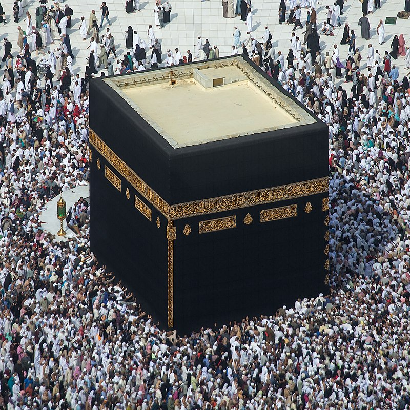
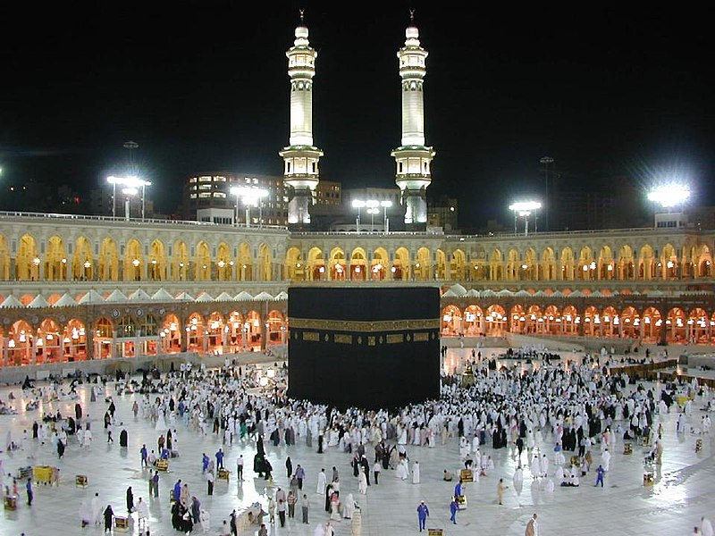
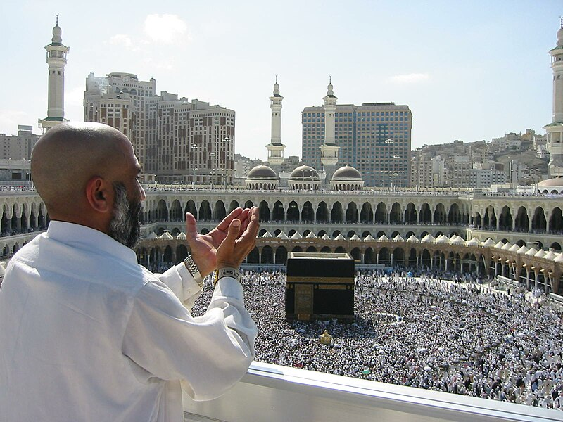
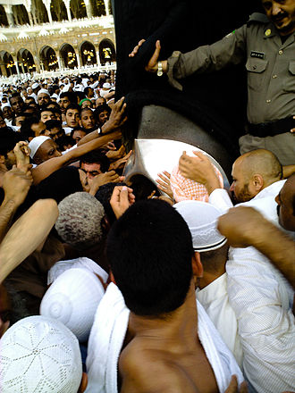
LA GROTTE DE HIRA
La caverne de Hira est identifiée aujourd'hui comme la grotte située sur le Jabal al-Nour (ou Djabal al-Nur, oronyme signifiant « Mont de la Lumière »), une montagne —
plus exactement une colline — culminant à 642 m, située à peu près à 4 km au
nord-ouest de La Mecque dans la région du Hedjaz en Arabie saoudite.La caverne de
Hira est identifiée aujourd'hui comme la grotte située sur le Jabal al-Nour (ou
Djabal al-Nur, oronyme signifiant « Mont de la Lumière »8), une montagne — plus
exactement une colline — culminant à 642 m, située à peu près à 4 km au nord-ouest
de La Mecque dans la région du Hedjaz en Arabie saoudite.La caverne de Hira est
identifiée aujourd'hui comme la grotte située sur le Jabal al-Nour (ou Djabal al-Nur, oronyme signifiant « Mont de la Lumière »), une montagne — plus exactement une
colline — culminant à 642 m, située à peu près à 4 km au nord-ouest de La Mecque dans
la région du Hedjaz en Arabie saoudite.
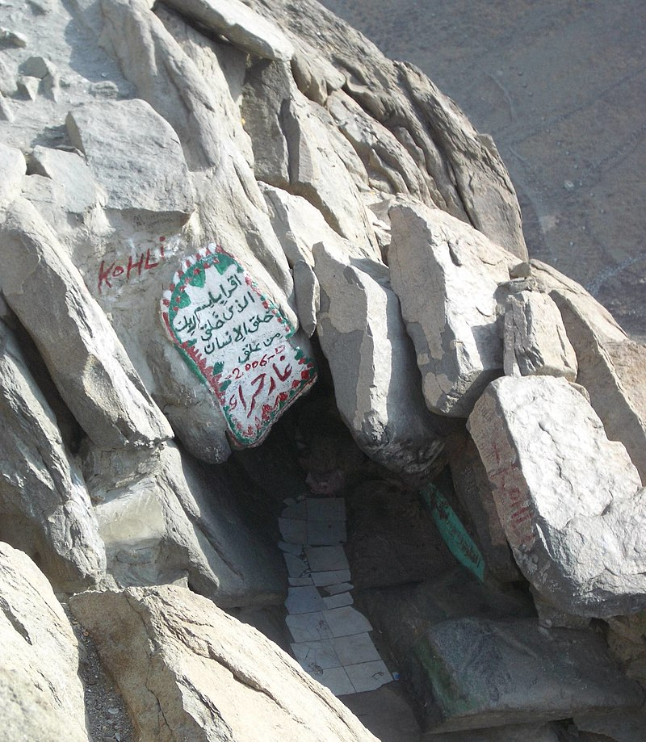
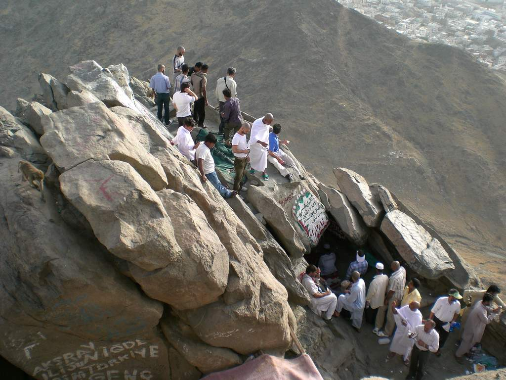
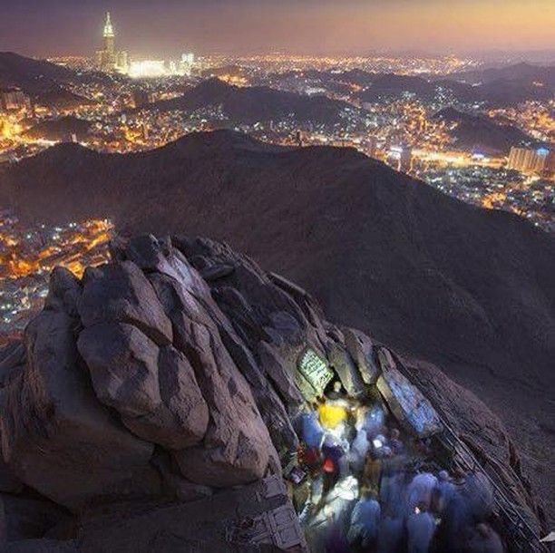
LE MONT ARAFAT
Aujourd'hui, c'est au mont Arafat qu'est délivré un khutba (sermon) de grande importance,destiné à l'ensemble de la communauté musulmane (la Oumma), car à leur retour, ce
message est répercuté par les pèlerins dans leurs patries respectives. Ce prêche
fait écho au célèbre sermon dit de « l'Adieu » que le Prophète prononça à midi, et
qui commençait ainsi : « Ô gens, écoutez-moi, car je ne sais si je serai présent
parmi vous en ce lieu, une fois passée cette année... ». C'est également à Arafat
que sera révélé à Mahomet un verset essentiel aux yeux des musulmans : «
Aujourd'hui, j'ai rendu parfaite votre religion ; J'ai parachevé Ma grâce sur
vous ; J'ai agréé l'islam comme étant votre religion » (Coran, 5,3). Une fois ce
sermon terminé, le Prophète accomplit la prière de midi qu'il enchaîna directement
avec celle de l'après-midi, à la suite de quoi il resta debout en prière jusqu'au
coucher du soleil. C'est le wuqûf (la « station », l'« arrêt »), qui est aujourd'hui un élément obligatoire du hajj. Cela explique que manquer cette étape dans la plaine
d'Arafat au moment prescrit frappe le pèlerinage de nullité. Et que l'on puisse même
résumer le pèlerinage à cette station à Arafat au jour prévu, ainsi que l'affirme un
hadith du Prophète rapportant cette parole qu'il aurait eue à cette occasion : « le
hajj, c'est Arafat ».
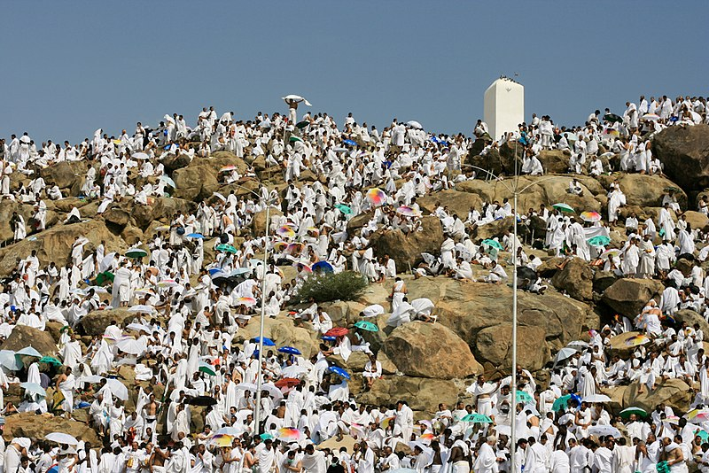
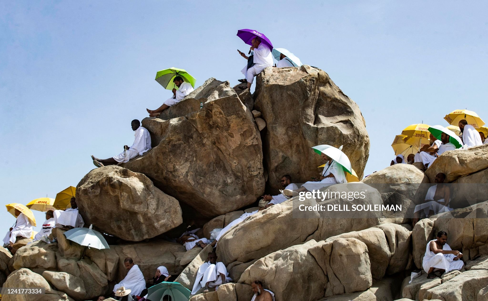
LE PUITS D'ISMAIL
Zamzam (arabe : زَمْزَم et parfois retranscrit Zemzem) est une source d'eau qui constitue le puits du sanctuaire de la Kaaba, à La Mecque (Arabie saoudite). D'origine
miraculeuse selon l'islam et la tradition musulmane, elle aurait surgi de par la
volonté de Dieu, par le biais de l'ange Gabriel creusant de son pied ou de son aile
pour la faire apparaître et sauver ainsi de la mort Agar (femme d'Abraham) et leur
fils Ismaël qui erraient dans le désert. Toujours en activité de nos jours, elle ne
s'est jamais tarie malgré des siècles d'existence dans le désert et une très forte
consommation. Les pèlerins ont à cœur d'en ramener de leur pèlerinage.Abd al-Muttalib,
l'aïeul de Mahomet, fit agrandir et embellir le puits. Il en fit garnir les parois de
maçonnerie. La tradition affirme qu'il en retira un jour deux gazelles d'or, des
sabres et des cuirasses dont il fit la porte de la Kaaba qu'il revêtit en plus de
plaques en métal précieux tiré de l'une des statues de gazelles ; la deuxième étant
placée dans le temple. D’après la croyance islamique, l'ange Gabriel a lavé le cœur du
Prophète Mahomet avec l'eau de Zamzam à l'âge de 5 ans environ, le jour de sa
purification.
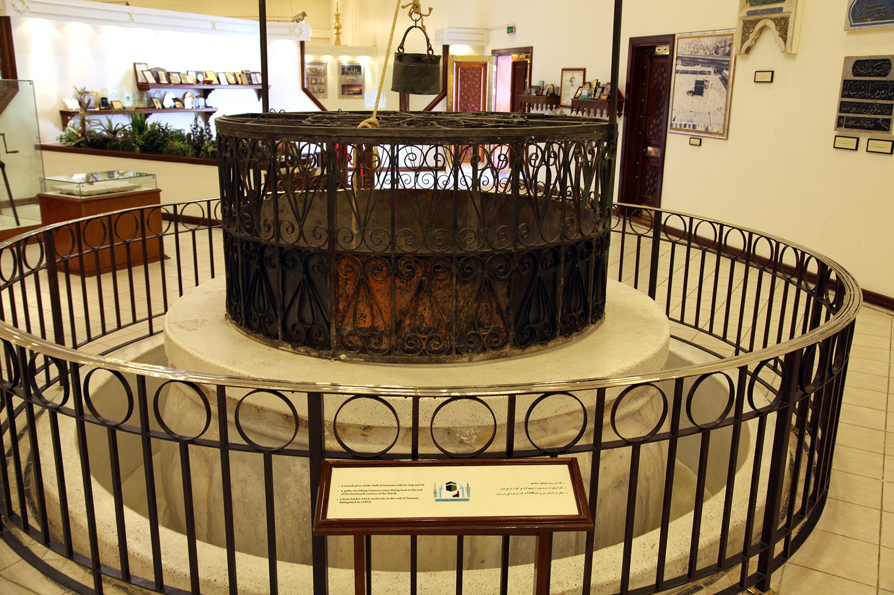
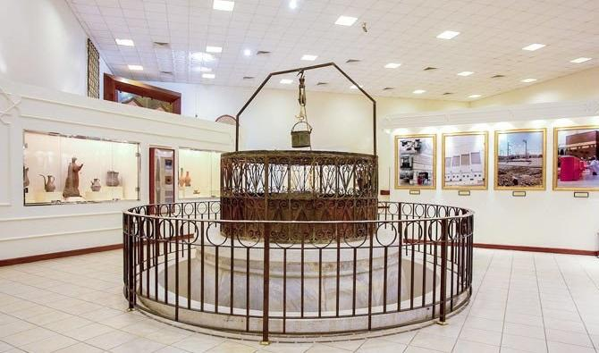
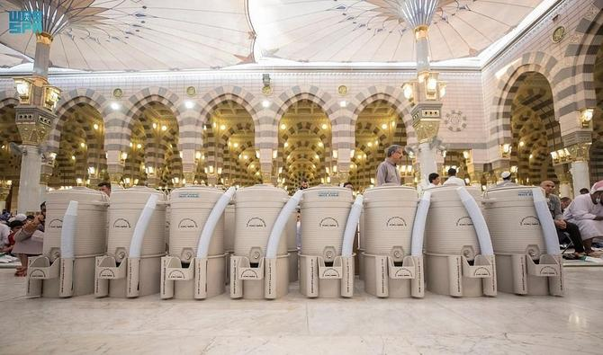
LA PIERRE NOIRE DE LA KAABA
La pierre noire (arabe : الحجر الأسود al-Ḥajar al-Aswad, ourdou : سنگ سیاہ
Sang-e-Sayah) est enchâssée dans l'angle sud-est de la Kaaba, le monument qui se
trouve au centre de la mosquée al-Harâm de La Mecque, en Arabie saoudite. Cette
pierre est une relique islamique qui, selon la tradition musulmane, remonte à
l'époque d'Adam et Ève1.
La pierre est un bétyle qui était vénéré dans l'Arabie préislamique. Elle aurait été placée intacte dans
le mur de la Kaaba par le prophète Mahomet en 605, cinq ans avant qu'il ne reçoive sa première
révélation. Elle s'est depuis cassée en plusieurs fragments qui ont été cimentés dans un cadre en argent
dans le flanc de la Kaaba. Son apparence est celle d'une roche noire avec des teintes rougeâtres,
d’environ 30 cm de diamètre, et dont la surface a été polie par les mains de millions de pèlerins2. Selon la tradition islamique, elle serait tombée du ciel pour indiquer à Adam et Ève où construire un autel :
pour cette raison, elle a souvent été décrite comme une météorite3 mais les dernières publications à ce
sujet tendent à infirmer cette hypothèse, et faute d'analyses, son origine reste indéterminée ; peut-être est-ce une agate.
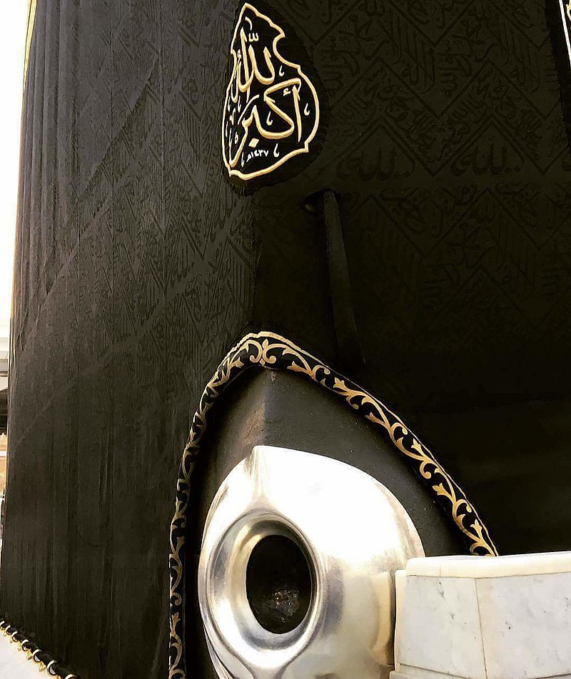
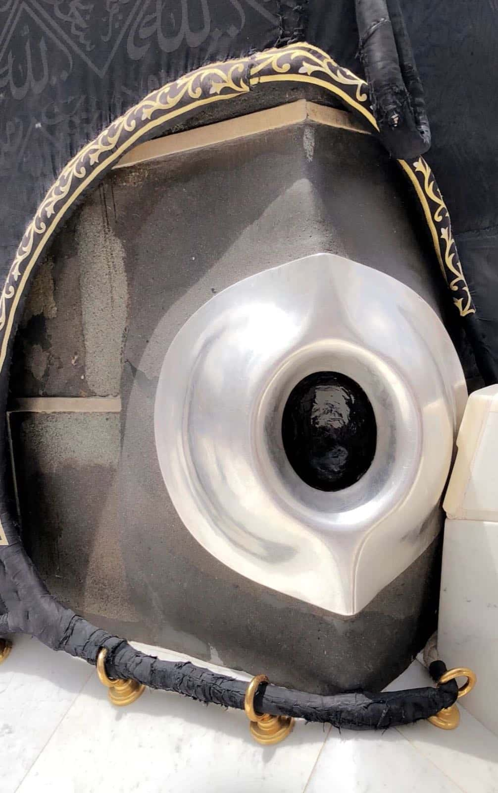
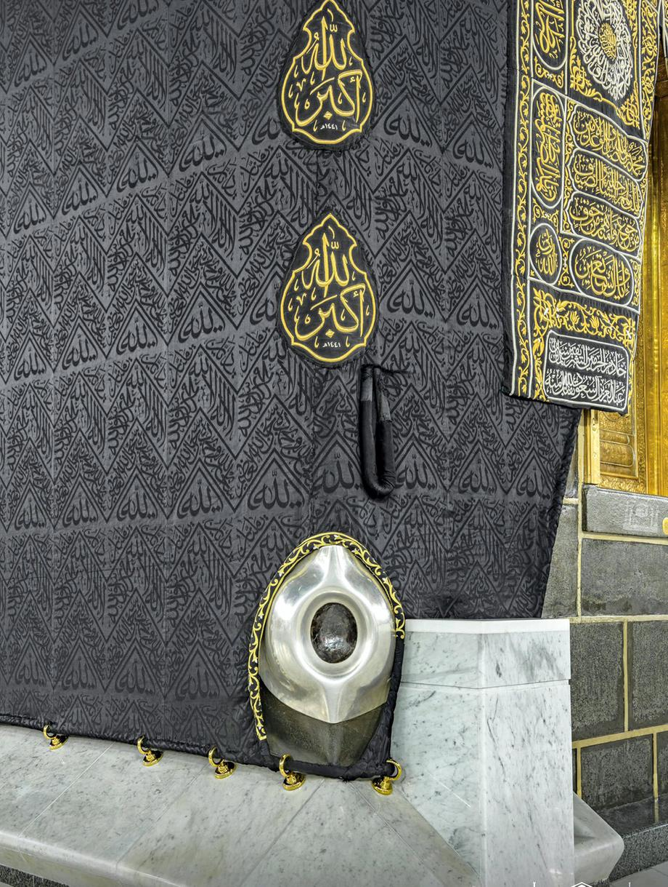
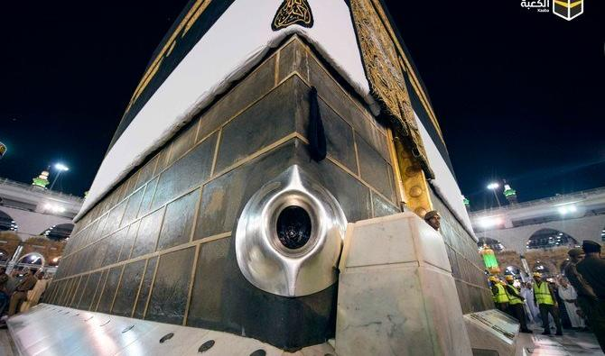
.jpg) 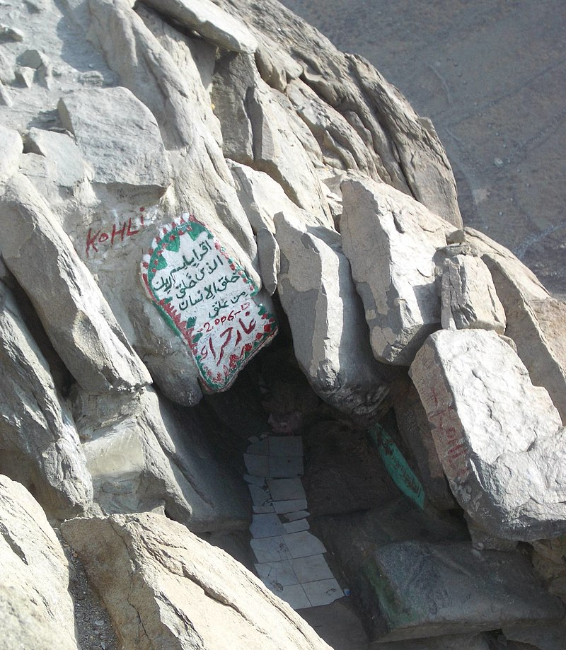
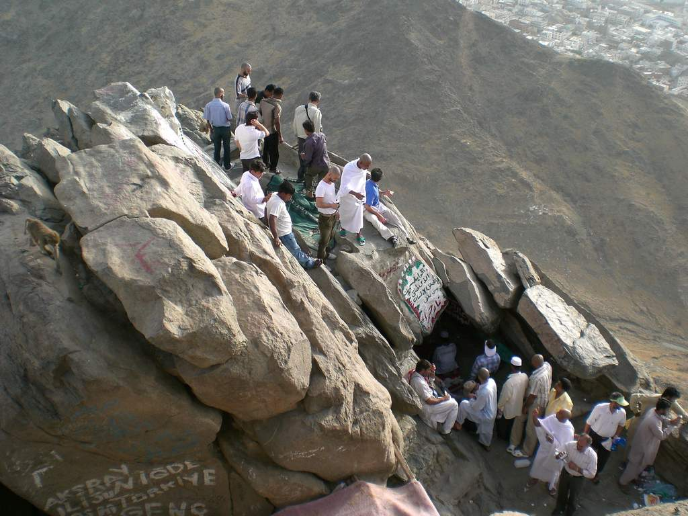
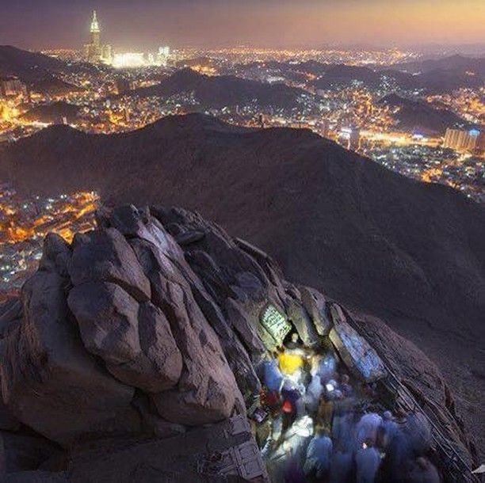
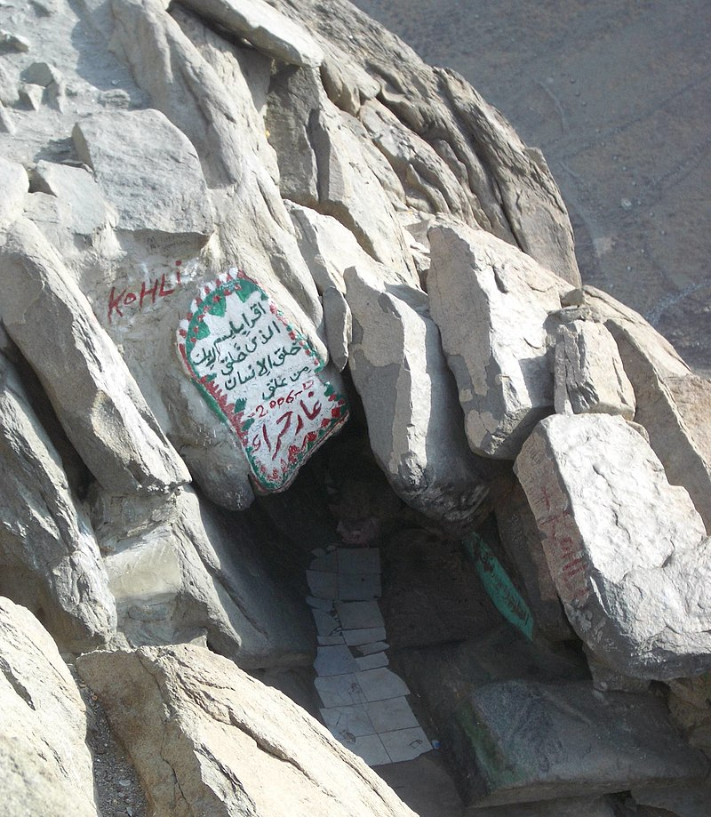
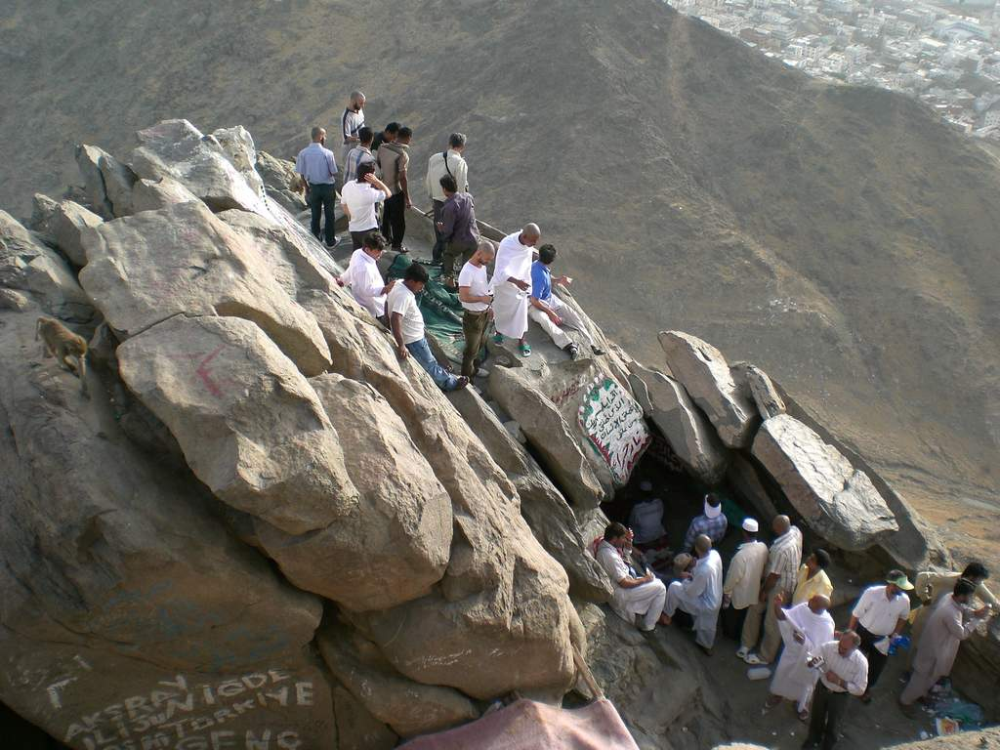
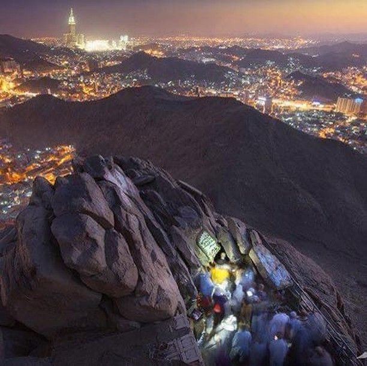